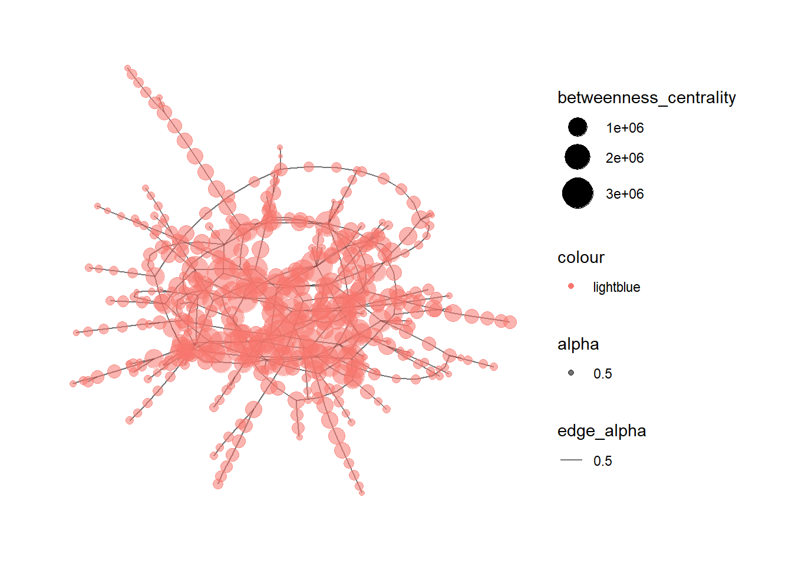

pacman::p_load(jsonlite,tidyverse,tidyr)In-class Exercise 06
Importing JSON MC3
1. Loading R Packages
2. Importing the data
mc3_data <- fromJSON("data/MC3/mc3-v1.json")Text Analytics
1. Loading R Packages
pacman::p_load(corporaexplorer,rvest,stringi)2. Importing the data
bible <- readr::read_lines("http://www.gutenberg.org/cache/epub/10/pg10.txt")3. Pre-processing the text
# Collapsing into one string.
bible <- paste(bible, collapse = "\n")
# Identifying the beginning and end of the Bible / stripping PJ metadata
# (technique borrowed from https://quanteda.io/articles/pkgdown/replication/digital-humanities.html).
start_v <- stri_locate_first_fixed(bible, "The First Book of Moses: Called Genesis")[1]
end_v <- stri_locate_last_fixed(bible, "Amen.")[2]
bible <- stri_sub(bible, start_v, end_v)
# In the file, every book in the bible is preceded by five newlines,
# which we use to split our string into a vector where each element is a book.
books <- stri_split_regex(bible, "\n{5}") %>%
unlist %>%
.[-40] # Removing the heading "The New Testament of the King James Bible",
# which also was preceded by five newlines.
# Because of the structure of the text in the file:
# Replacing double or more newlines with two newlines, and a single newline with space.
books <- str_replace_all(books, "\n{2,}", "NEW_PARAGRAPH") %>%
str_replace_all("\n", " ") %>%
str_replace_all("NEW_PARAGRAPH", "\n\n")
books <- books[3:68] # The two first elements are not books
# Identifying new chapters within each book and split the text into chapters.
# (The first characters in chapter 2 will e.g. be 2:1)
chapters <- str_replace_all(books, "(\\d+:1 )", "NEW_CHAPTER\\1") %>%
stri_split_regex("NEW_CHAPTER")
# Removing the chapter headings from the text (we want them as metadata).
chapters <- lapply(chapters, function(x) x[-1])4. Metadata
We are not quite happy with the long book titles in the King James Bible, so we retrieve shorter versions from esv.org which will take up less space in the corpus map plot.
book_titles <- read_html("https://www.esv.org/resources/esv-global-study-bible/list-of-abbreviations") %>%
html_nodes("td:nth-child(1)") %>%
html_text() %>%
.[13:78] # Removing irrelevant elements after manual inspection.We add a column indicating whether a book belongs to the Old or New Testament, knowing that they contain respectively 39 and 27 books.
testament <- c(rep("Old", 39), rep("New", 27))5. Creating data frame with text and metadata
Data frame with one book as one row.
bible_df <- tibble::tibble(Text = chapters,
Book = book_titles,
Testament = testament)
# We want each chapter to be one row, but keep the metadata (book and which testament).
bible_df <- tidyr::unnest(bible_df, Text)6. corporaexplorer
KJB <- prepare_data(dataset = bible_df,
date_based_corpus = FALSE,
grouping_variable = "Book",
columns_doc_info = c("Testament", "Book"))class(KJB)[1] "corporaexplorerobject"explore(KJB)Shiny applications not supported in static R Markdown documents
Network Analytics
1. Loading R Packages
pacman::p_load(jsonlite,tidygraph, ggraph, visNetwork, graphlayouts, ggforce, skimr, tidytext, tidyverse,tidyr)2. Importing the data
#Vast Challenge 2023 MC3
mc3_data_2023 <- fromJSON("data/MC3.json")3. Extract Edges
mc3_edges <-
as_tibble(mc3_data_2023$links) %>%
distinct() %>%
mutate(source =
as.character(source),
target =
as.character(target),
type = as.character(type))%>%
group_by(source,target,type) %>%
summarise(weights = n()) %>%
filter(source!=target) %>%
ungroup()4. Extract Nodes
mc3_nodes <-
as_tibble(mc3_data_2023$nodes) %>%
mutate(country = as.character(country),
id = as.character(id),
product_services =
as.character(product_services),
revenue_omu =
as.numeric(as.character(revenue_omu)),
type=as.character(type)) %>%
select(id,country,type,revenue_omu,product_services)id1 <- mc3_edges %>%
select(source) %>%
rename(id = source)
id2 <- mc3_edges %>%
select(target) %>%
rename(id = target)
mc3_nodes1 <- rbind(id1, id2) %>%
distinct() %>%
left_join(mc3_nodes,
unmatched = "drop")5. Construct the graph
mc3_graph <- tbl_graph(nodes = mc3_nodes1,
edges = mc3_edges,
directed = FALSE) %>%
mutate(betweenness_centrality =
centrality_betweenness(),
cloesness_centrality = centrality_closeness())6. Plotting the network graph
mc3_graph %>%
filter(betweenness_centrality >= 100000) %>%
ggraph(layout = "fr") +
geom_edge_link(aes(alpha=0.5)) +
geom_node_point(aes(
size= betweenness_centrality,
color = "lightblue",
alpha = 0.5))+
scale_size_continuous(range=c(1,10))+
theme_graph()